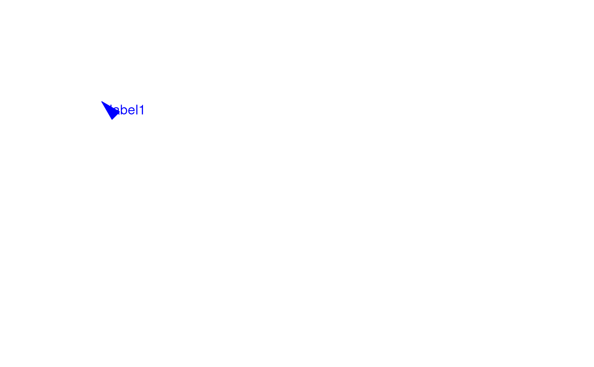

addArrowMark.RdA function to add arrow mark for emphasizing peaks
addArrowMark(
pos = grid.locator(),
label = NULL,
angle = 15,
length = unit(0.25, "inches"),
col = "red",
cex = 1,
quadrant = 4,
type = "closed",
vp = NULL
)A unit object representing the location of arrow mark to be placed at current viewport. Default is the value of grid.locator, which will get the location of the mouse click.
A character or expression vector.
A parameter passed into grid::arrow function. The angle of arrow head in degrees (smaller numbers produce narrower, pointier arrows). Essentially describes the width of the arrow head.
A parameter passed into grid::arrow function. Aunit specifying the length of the arrow head.
color of the arrow
Multiplier applied to fontsize
the direction of arrow, 1: to bottomleft, 2: to bottomright, 3: to topright, 4: to topleft
A parameter passed into grid::arrow function. One of "open" or "closed" indicating whether the arrow head should be a closed triangle.
A Grid viewport object. It must be output of viewTracks
invisible x, y position value.
See Also as addGuideLine, arrow
grid.newpage()
addArrowMark(list(x=unit(.5, "npc"),
y=unit(.5, "npc")),
label="label1",
col="blue")

## how to get the position by mouse click
if(interactive()){
pos <- addArrowMark(label="byClick")
addArrowMark(pos, label="samePosAsAbove")
}